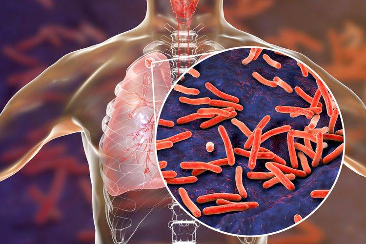
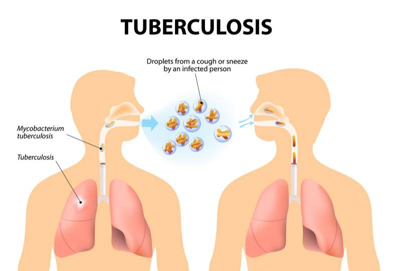

GROUP IV
HOME
(current)
VIRUS TUBERCULOSIS (TBC)
Gejala
Pencegahan dan Pengobatan
KASUS PENYEBARAN VIRUS TBC
Asal Mula Virus
Kawasan Terinfeksi
Peta Wilayah Kasus Penyebaran
PENANGGULANGAN VIRUS TBC
Peran Pemerintah
Kesadaran Masyarakat
Upaya Meminimalisir Penularan
IMPROVE YOUR KNOWLEDGE
WITH GROUP 4
Let's learn more about Tuberculosis Virus in world history.

Ilustrasi VIRUS TBC Dalam Paru-paru Manusia
Tuberculosis Virus

Ilustrasi Proses Penularan Virus TBC
Tuberculosis Virus
Ilustrasi Bentuk Virus TBC
Tuberculosis Virus
Previous
Next